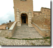
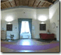
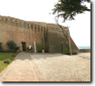

BiCi
PROOFS@BiCi: Efficient Probabilistic Proofs
University Residential Center, Bertinoro
Local Weather Forecast
Bertinoro Weather
How To Reach Bertinoro
Home
Program
Registration
Participants
Location


